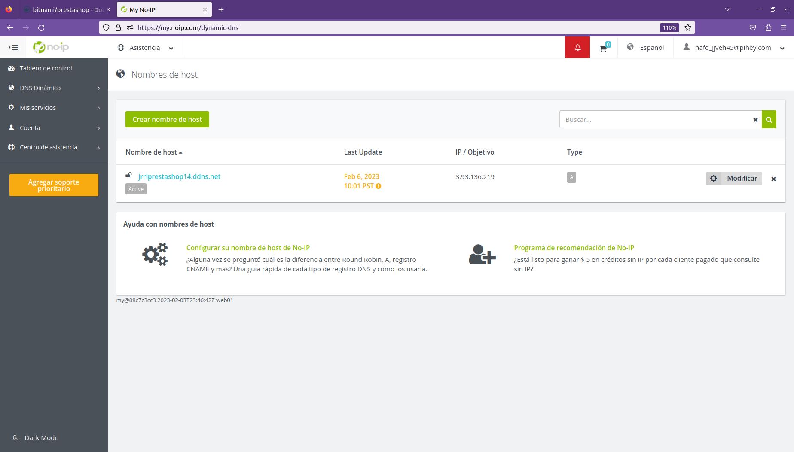

PrestaShop en Docker¶
En esta práctica realizaremos la misma operación que en la práctica anterior, salvo por el contenedor que tenemos que usar, en vez de usar WordPress, usaremos PrestaShop y adición de más variables. Puesto que de PrestaShop no hay una imagen oficial, usaremos bitnami/prestashop. También asignaremos a la instancia al menos 8GB de memoria RAM para que PrestaShop se cree en poco tiempo.
Warning
Puede que las imágenes no se vean
Crearemos un repositorio y lo clonaremos en nuestra máquina local, apenas hay cambios con respecto a la práctica anterior, por lo que usaremos casi todo el código de la anterior práctica para aprovechar el tiempo y realizar únicamente la parte del contenedor de PrestaShop.
La estructura del repositorio es la siguiente:
- ansible
- inventario
- inventario --> Archivo
- playbooks
- delete_compose.yaml
- deploy_compose.yaml
- install_docker.yaml
- vars
- variables.yaml
- main.yaml
- docker
- .env
- docker-compose.yaml
- terraform
- main.tf
- variables.tf
docker¶
En esta parte tendremos lo mismo que en la anterior práctica, salvo por el cambio de WordPress a PrestaShop en el archivo de docker-compose.yaml y la agregación de variables al archivo .env, por lo que explicaré las adiciones en ambos archivos.
.env¶
Antes de entrar con el archivo docker-compose.yaml, asignaremos las variables que hay que usar para PrestaShop.
La primera variable, USER_FIRST_NAME, nos permitirá establecer el nombre del propietario de la tienda de PrestaShop, con la segunda variable, USER_LAST_NAME, servirá para establecer los apellidos o el segundo nombre del propietario. Con la variable PRESTASHOP_ACCESS_EMAIL establecemos el correo electrónico que se usará en PrestaShop para el acceso al Back-Office, con la variable PRESTASHOP_ACCESS_PASSWORD estableceremos la contraseña de acceso al Back-Office.
La siguiente variable, PRESTASHOP_DOMAIN, nos servirá para indicar el nombre de dominio que tiene la tienda online, con PRESTASHOP_COUNTRY establecemos el país de la tienda y con PRESTASHOP_LANGUAGE establecemos el idioma para PrestaShop.
USER_FIRST_NAME="Juan Ramón"
USER_LAST_NAME="Rueda Lao"
PRESTASHOP_ACCESS_EMAIL=ujgu.ltwjr72@pihey.com
PRESTASHOP_ACCESS_PASSWORD=Admin123@45
PRESTASHOP_DOMAIN=jrrlprestashop14.ddns.net
PRESTASHOP_COUNTRY_LANGUAGE=es
docker-compose.yaml¶
Comenzaremos directamente con el contenedor de PrestaShop, usaremos la imagen bitnami/prestashop:8.0.1, esta es la última versión, por lo que por buenas prácticas, no usaremos latest o dejaremos en blanco la versión ya que al subirse otra versión nueva de la imagen, nos puede dar fallos al implementarla. Esta imagen realiza la instalación de PrestaShop por defecto, por lo que usaremos las variables de entorno que necesitemos y queramos para personalizar el sitio web.
Con la variable de entorno PRESTASHOP_FIRST_NAME asignamos el nombre del propietario que hemos declarado en el archivo de variables, con la segunda variable, PRESTASHOP_LAST_NAME estableceremos la variable para los apellidos o el segundo nombre del usuario, con la tercera variable, PRESTASHOP_EMAIL asignaremos el email que se usará para el acceso al Back-Office y con PRESTASHOP_PASSWORD estableceremos la contraseña de acceso al Back-Office.
En la variable PRESTASHOP_HOST, pondremos la variable para el dominio de la tienda online, en la variable PRESTASHOP_ENABLE_HTTPS=yes estableceremos que la tienda use TLS / SSL para agregar seguridad. En PRESTASHOP_COUNTRY asignaremos la variable para establecer el país y en PRESTASHOP_LANGUAGE usaremos la variable para indicar el idioma de la tienda.
Para ir finalizando con las variables de entorno de PrestaShop, usaremos la variable PRESTASHOP_DATABASE_HOST para indicar el contenedor que tiene la base de datos, con la variable PRESTASHOP_DATABASE_NAME indicaremos la base de datos que se usará para crear las tablas y los registros, con PRESTASHOP_DATABASE_USER estableceremos el usuario de la base de datos y con PRESTASHOP_DATABASE_PASSWORD la contraseña del usuario de la base de datos.
A continuación, si no queremos evitar perder datos, hay que usar un volumen gestionado por Docker, en este caso la variable del volumen es prestashop_data y la tenemos que vincular al directorio /bitnami/prestashop, después, el contenedor esperará a que el contenedor mysql esté saludable para poder ejecutarse y con un restart always para que se reinicie en cuanto tenga algún fallo y por último, el contenedor estará conectado a las networks frontend-network y backend-network para poder servir su contenido y conectarse con el contenedor mysql.
prestashop:
image: bitnami/prestashop:8.0.1
# ports:
# - 80:80
environment:
- PRESTASHOP_FIRST_NAME=${USER_FIRST_NAME}
- PRESTASHOP_LAST_NAME=${USER_LAST_NAME}
- PRESTASHOP_EMAIL=${PRESTASHOP_ACCESS_EMAIL}
- PRESTASHOP_PASSWORD=${PRESTASHOP_ACCESS_PASSWORD}
- PRESTASHOP_HOST=${PRESTASHOP_DOMAIN}
- PRESTASHOP_ENABLE_HTTPS=yes
- PRESTASHOP_COUNTRY=${PRESTASHOP_COUNTRY_LANGUAGE}
- PRESTASHOP_LANGUAGE=${PRESTASHOP_COUNTRY_LANGUAGE}
- PRESTASHOP_DATABASE_HOST=mysql
- PRESTASHOP_DATABASE_NAME=${MYSQL_DATABASE}
- PRESTASHOP_DATABASE_USER=${MYSQL_USER}
- PRESTASHOP_DATABASE_PASSWORD=${MYSQL_PASSWORD}
volumes:
- prestashop_data:/bitnami/prestashop
depends_on:
mysql:
condition: service_healthy
restart: always
networks:
- frontend-network
- backend-network
Por defecto, esta imagen de PrestaShop usa el puerto 8080 de Apache, por lo que para conectar con el contenedor prestashop, hay que indicar el contenedor con el puerto 8080. También modificaremos el dominio de DOMAINS para que adecuarlo a la práctica.
https-portal:
image: steveltn/https-portal
ports:
- '80:80'
- '443:443'
volumes:
- ssl_certs_data:/var/lib/https-portal
environment:
# DOMAINS: 'localhost -> http://prestashop:8080'
# STAGE: 'local'
DOMAINS: 'jrrlprestashop14.ddns.net -> http://prestashop:8080'
STAGE: 'production'
restart: always
networks:
- frontend-network
Proceso de trabajo¶
Como hicimos con la práctica anterior, ejecutaremos primero Terraform para montar la infraestructura en AWS y la IP elástica que nos devuelva, la pondremos en el archivo inventario de Ansible. Después ejecutaremos el archivo main.yaml con las dos primeras variables para instalar Docker, Docker Compose y pasar los archivos que hemos creado de Docker Compose, además de ejecutar la infraestructura con el segundo playbook.
ansible-playbook -i inventario/inventario main.yaml --extra-vars "instalar=docker desplegar=compose"
Usaremos la IP elástica de la instancia de AWS para asignar el dominio a la IP elástica en No-IP.

Cuando Ansible termine de ejecutar todos los playbooks que queríamos ejecutar, esperaremos un par de minutos a que la infraestructura de contenedores esté completamente lista y accederemos al dominio que hemos preparado. Si todo ha ido bien, tendrá que salir la tienda online montada.
Lo siguiente que haremos será acceder al Back-Office de nuestra tienda online, para ello, no podemos usar dominio/admin ya que no está disponible dicho directorio por tanto tenemos que acceder al volumen de Docker que hay en la instancia para saber con certeza el acceso al Back-Office. Nos conectaremos por SSH a la instancia y usaremos los comandos:
sudo -s
cd /var/lib/docker/volumes/docker_prestashop_data/_data
ls
Vemos que no hay un directorio admin, pero sí que hay un directorio administration que será el que probaremos junto al dominio.
Vemos que hemos podido acceder al login del Back-Office, lo siguiente es poner el email y la contraseña que hemos asignado en el archivo docker-compose.yaml.
Una vez hayamos accedido, iremos a Parámetros de la tienda ---> Configuración para comprobar que tenemos realmente activado el TLS / SSL en la tienda.
A continuación, usaremos abriremos una nueva pestaña y probaremos a acceder a phpMyAdmin. Tenemos que poner :point_right: dominio:8080.
Después, accederemos a la base de datos que hemos designado para PrestaShop y veremos que hay bastantes tablas creadas.
Por último, comprobaremos los logs de los contenedores, en el terminal de la instancia, saldremos de los privilegios de ROOT mediante el comando exit. Después, en el directorio en el que están los archivo de Docker Compose, usaremos el comando:
docker compose logs -f
Con logs, comprobamos el funcionamiento de la infraestructura y sus "procesos", con -f hacemos que se quede constantemente en primer plano, sin que muestre todos los logs que hay y luego finalice la ejecución del comando. Probaremos a refrescar la tienda online y veremos que se generan nuevo contenido.